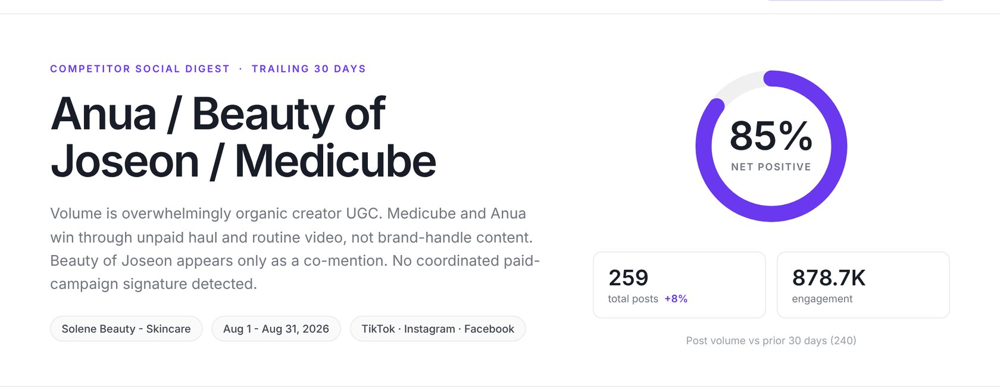
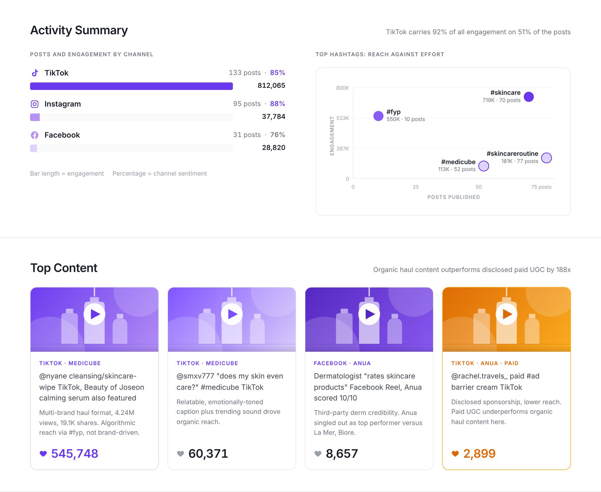
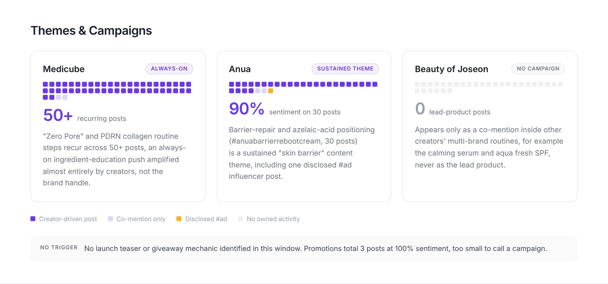
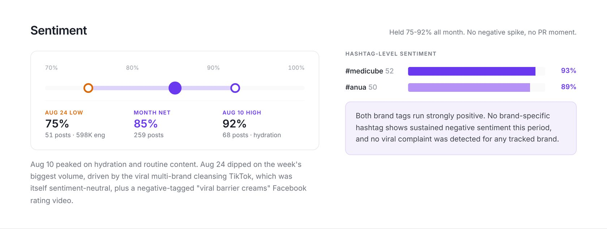
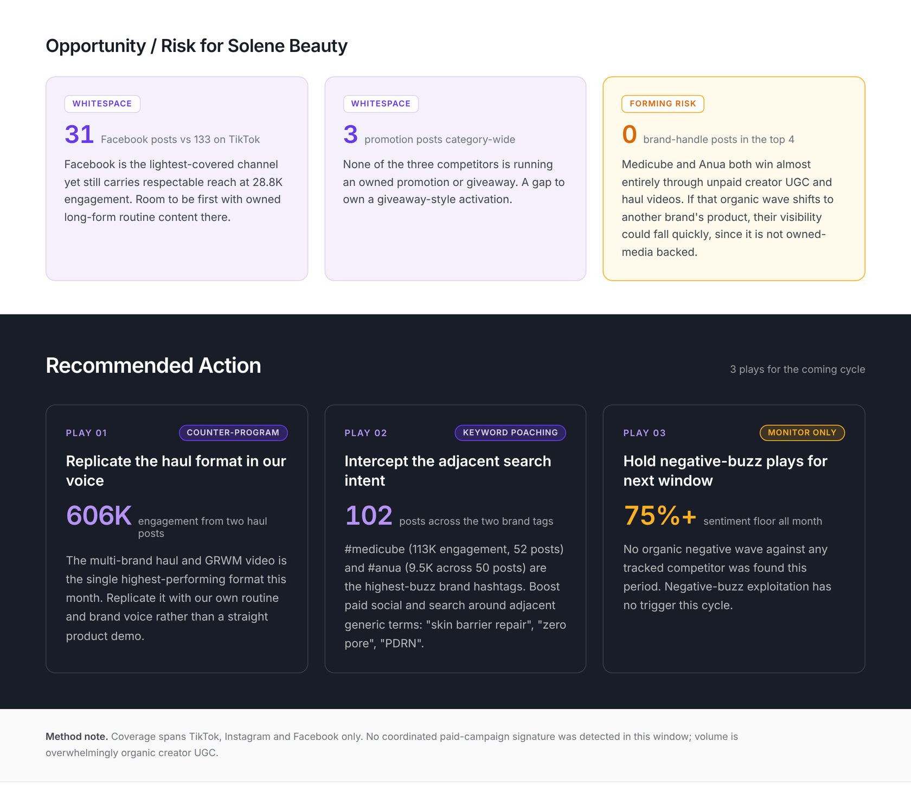

Brands wanted to know what their competitors were doing on social, but the product had no report for it. Users built their own, by hand, in other tools. I designed an AI agent that clients set up in three steps. On every cycle, it sends a report that ends in what to do next.
Revuze collects thousands of social posts across TikTok, Instagram, Facebook, YouTube and news. The data to answer "what are my competitors doing?" was already there, but there was no report in the product.
Users built their own: they pulled findings from the CI research canvas and rebuilt them in PowerPoint, Google Slides or another tool. Every cycle meant the same manual work outside Revuze, and the report was often out of date by the time it was ready.
Move Revuze from a data platform clients explore to an AI that works for them, and keeps them coming back every cycle.
Brand and marketing teams want to know what competitors did, what worked, and what they should do about it.
Make creating an agent as easy as setting an alert, and make its output something a team can act on, not just read.
I was the only designer at Revuze, working with the product manager and R&D.
The main decision was to make creating an agent simple. An agent sounds complex, so setup could not feel like configuring one. I reused the Alerts pattern clients already knew: three guided steps, scope, cadence, then review and approve.
I also limited the choices on purpose: up to three competitor brands. More brands meant more setup and a diluted report.
The report reads like a briefing. It opens with the answer: the headline and overall sentiment. Then the evidence: channels, top content, competitor themes and sentiment over time. It ends with opportunities, risks and three recommended plays for the next cycle.
Each play has a type, such as counter-program, keyword poaching or monitor only, so a team can see at a glance whether to act now or wait.
Pick a category, up to three brands, the channels and an optional focus. Set the cadence and recipients, review, approve, and the agent is live.
A sample report for the skincare category, tracking three competitor brands over 30 days.





| Result | Evidence |
|---|---|
| Shipped: clients create their own competitor agents in three steps | Live in Vee Hive |
| Early activity since launch looks strong | Product usage |
| Competitor reports now live inside Revuze, instead of being rebuilt by hand in slides every cycle | Report template |
| The setup reuses the Alerts pattern, so clients already know how to create an agent | Shared flow and Hubs components |
With AI agents, design sits at both ends: making setup simple enough that people trust the agent with the task, and shaping its output so it reads like advice from an analyst, not a data dump.